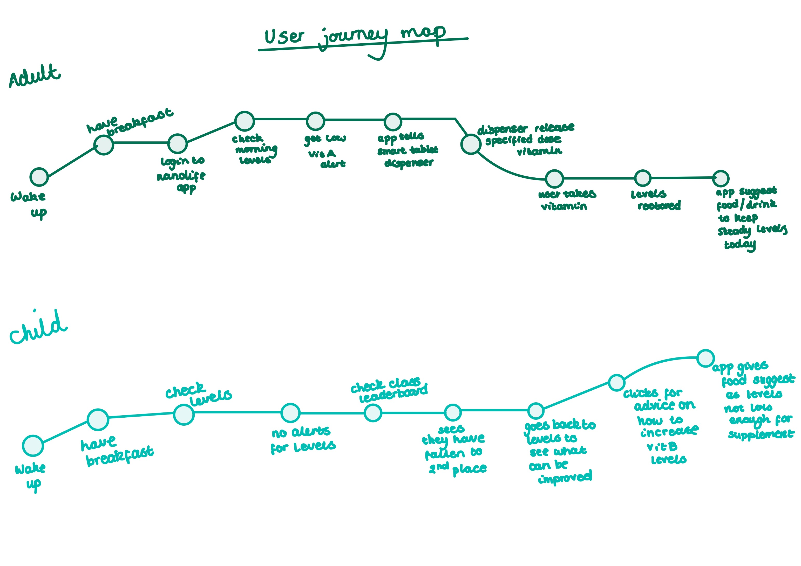
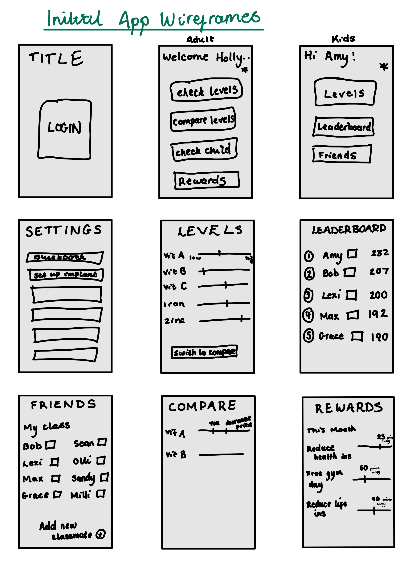
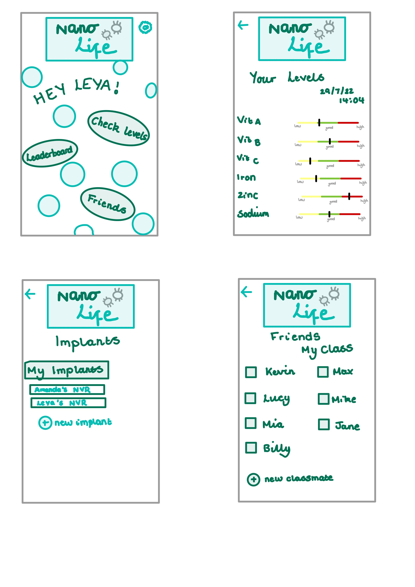
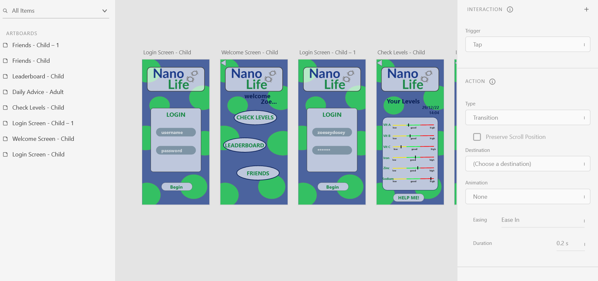

As a third year optional module, I chose Critical Design to grasp new design perspectives and work on all of my design process skills. During this module we have learnt about design fictions, fuelling my knowledge of the future of the design industry and then were tasked with creating our own fiction. I created a brainstorm surrounding the health industry and was inspired by the new diabetes implants to create something of a similar nature but more advanced. After coming up with my product and it's process, I was able to draw up user journey maps so that I could create the accompanying app accordingly.


After reviewing my user journey maps for the different clientele, I began creating my first wireframes using black and white drawings. By drawing the app out in this way, I am able to see functions I might have previously missed, decide how exactly I would like the app to look and work on it's flow. After I designed these, I moved on to developing them into advanced wireframes where I could play with some colour palettes and more advanced designs before creating the finished app on Adobe XD.


Fianlly, after I had completed all of the sketches, I was able to start developing my app in Adobe XD. Here is an image of my initial couple of pages while I worked at connecting them and developing the colour palette once I had seen it on the screen. While this module has developed my skills of using these design tools, I have also learnt about the critical process and therefore my app represents deeper meanings. These are based around malnutrition within the western world, how supplements are impacting this and finally I decided it was key to include a child's version of this product to discuss weight and nutrition from a young person's perspective and the dangers surrounding this.